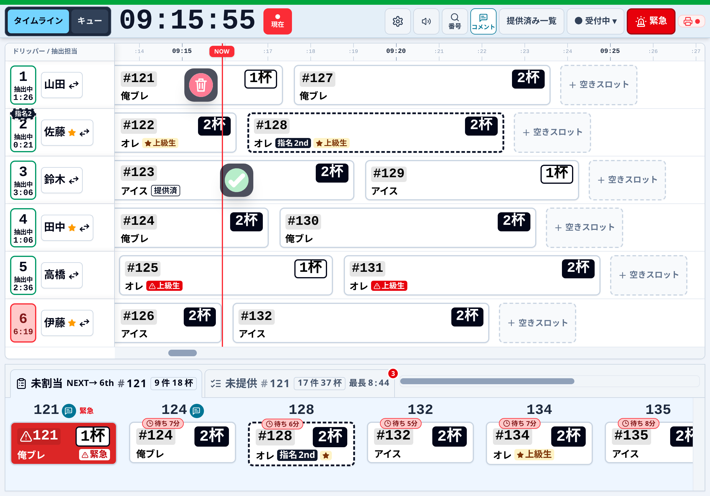
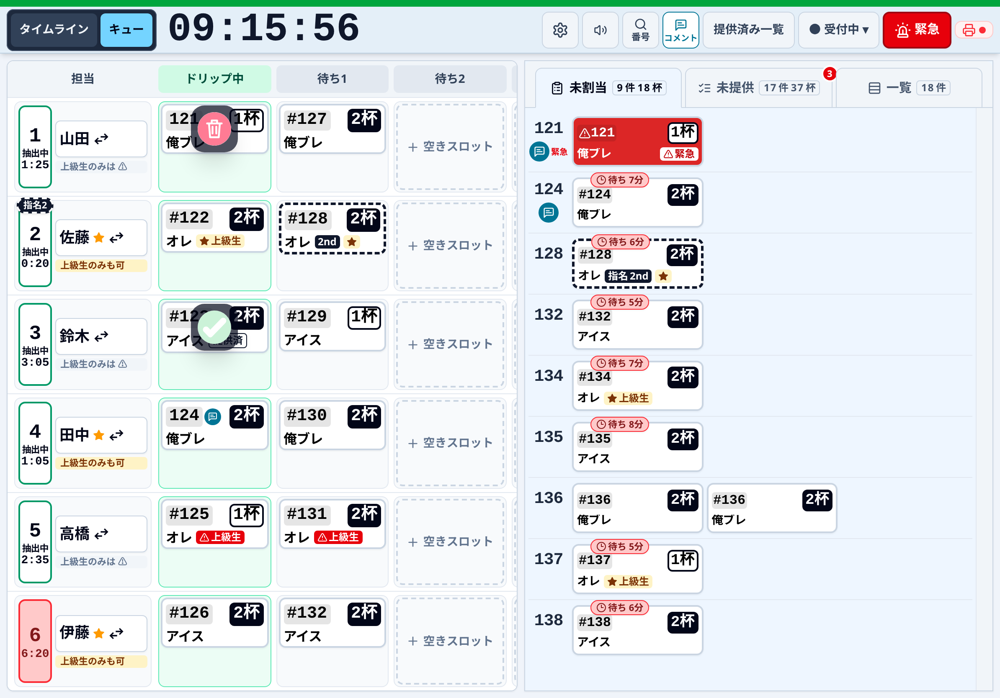
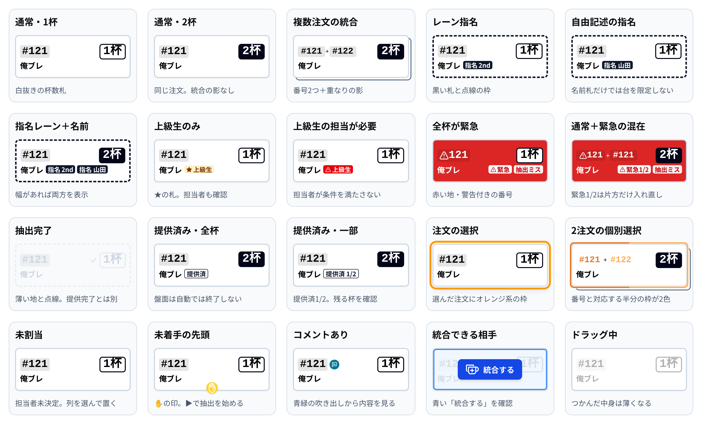
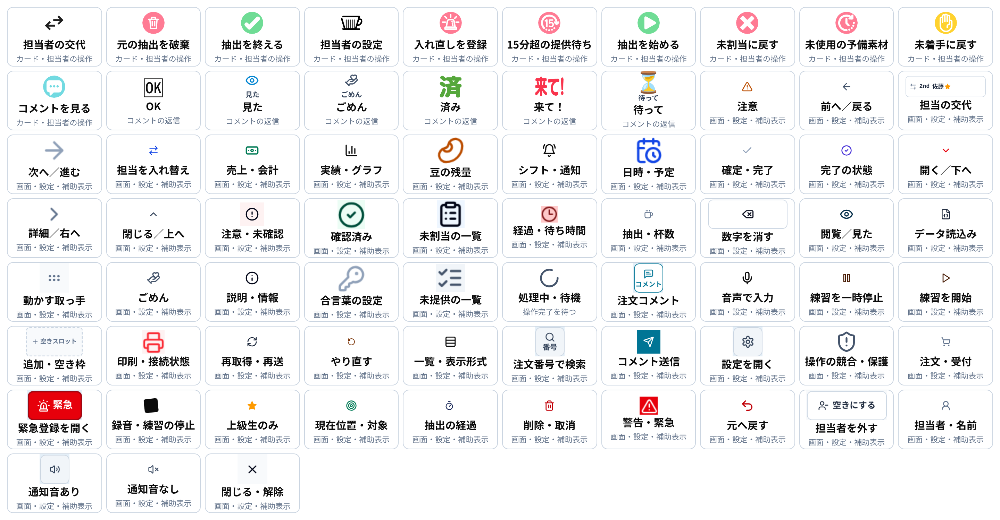
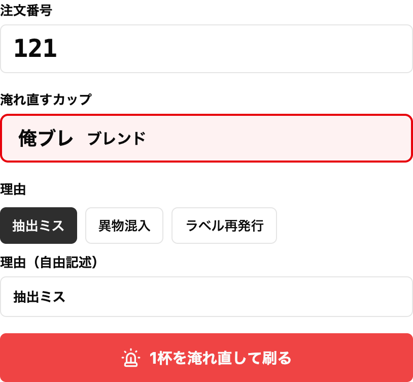
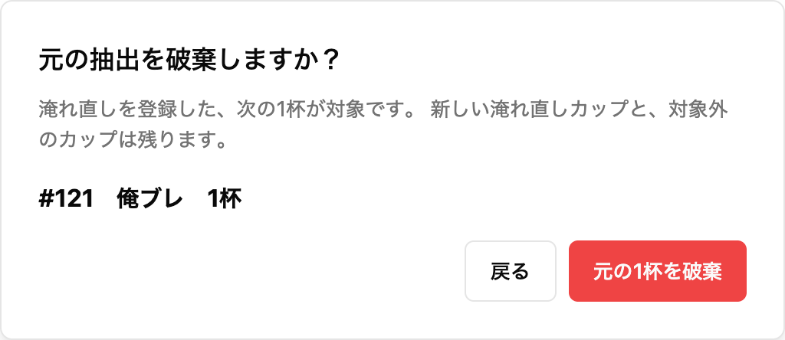
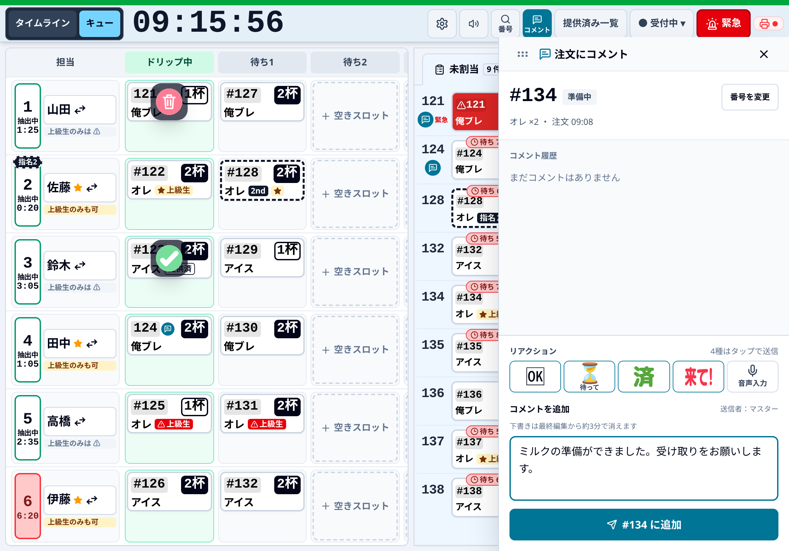
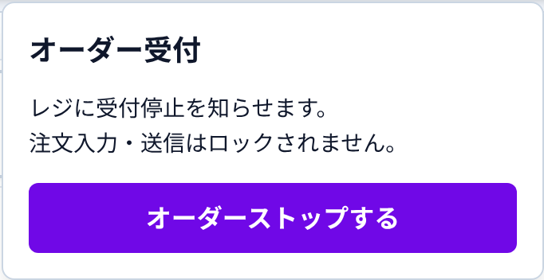
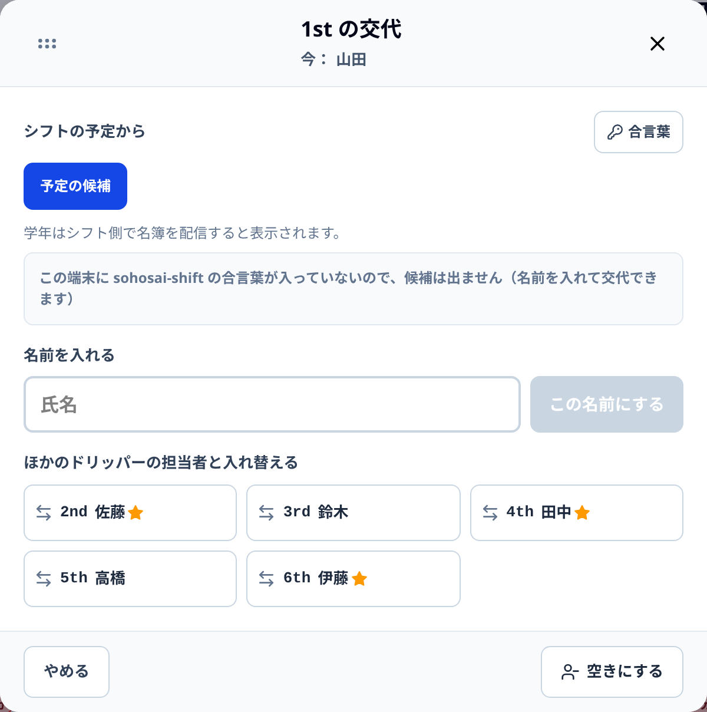

カードは抽出する仕事を表す札です。注文番号と現物を照合し、担当と順番を決めて進めます。

タイムライン表示｜iPad Pro 11相当・横向き 1194 × 834 CSS px。架空の注文・担当者で撮影。
「タイムライン」と「キュー」は同じ盤面。表示を替えても、注文・担当・進行は共通です。

キュー表示｜担当欄の右は「ドリップ中・待ち1・待ち2・待ち3」。下の未割当は同じ注文内で最大3列に折り返します。
実画面と同じカードの20種類の例です。番号・杯数・指名・緊急の印は色だけに頼らず確認します。

カード操作の素材と返信表示に続き、設定・実績・通知の記号を掲載しています。背景・線・色は実際の使用箇所に合わせています。押す前に、近くの文字も確認します。

✓は抽出を終え、次の待機を始めます。「元の抽出を破棄」は対象を確認して確定します。「見た」「ごめん」は過去の返信表示です。現在送れる返信はOK・待って・済み・来て！です。予備素材は通常画面に出ません。
「緊急を登録」「元の抽出を破棄」「緊急を取り消す」は、それぞれ別の操作です。

「緊急」から開き、注文番号と淹れ直すカップを確認します。抽出ミス・異物混入・ラベル再発行か自由記述で理由を入れ、確定すると淹れ直しが追加されます。

淹れ直しがある未完了の元カードにはゴミ箱が出ます。番号・商品・杯数を確認して「元の1杯を破棄」など、杯数が入った破棄ボタンを押します。淹れ直しや統合相手は残り、次の待機は自動開始しません。
盤面にカードがない注文・提供済みの注文にも、本日の注文番号からコメントを追加できます。

「コメント」から注文番号か最近の注文を選びます。画像は入力中の例です。送信前に宛先の番号を再確認します。
受付の停止と、すでに受けた注文の抽出は別です。担当交代も自動では行われません。

受付状態を読み、確認パネルで停止・再開を確定します。他端末で変わった場合は最新状態を再確認します。注文入力・送信・抽出をロックする機能ではありません。

列の番号・名前・上級生の印を確認して次の人を選びます。予定表は候補で、自動交代はしません。交代後も列のカードは残ります。予定の「交代 → 名前」は押すとすぐ交代するため、先に名前を確認します。
| 表示・状況 | 確認すること |
|---|---|
| 「未送信」が残る | 連打せず、端末内の未送信と接続を確認します。他端末との競合があれば最新の盤面を確認します。 |
| プリンターが赤い | 電源・接続・証明書・未印刷と代理印刷の設定を確認します。重複ラベルは現物と照合します。 |
| 「あとちょっと」・要確認 | 予定超過だけで✓を押さず、淹れ忘れ・押し忘れ・現物を確認します。 |
| ボタンがない／押せない | 閲覧専用か、接続待ちか、送信中かを確認します。未着手・抽出中・完了で操作が異なります。 |
| 赤い通知の数字 | 新着コメント・長時間待ちなどの未確認数です。数字が消えても注文や提供は完了しません。 |
| 別のタブでも開いた | 操作用は1つのタブにします。別表示には閲覧専用の入口を使います。 |